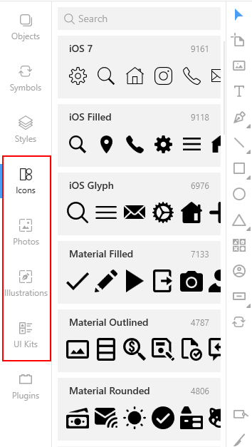
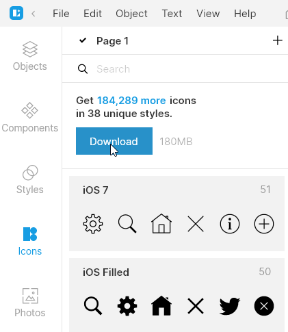
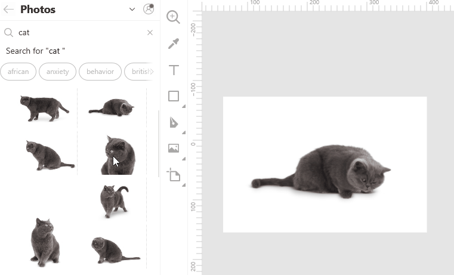
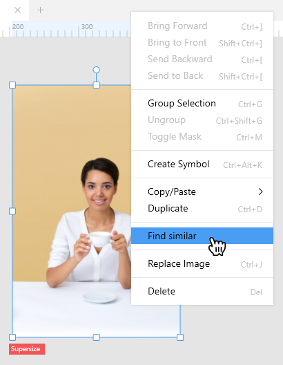
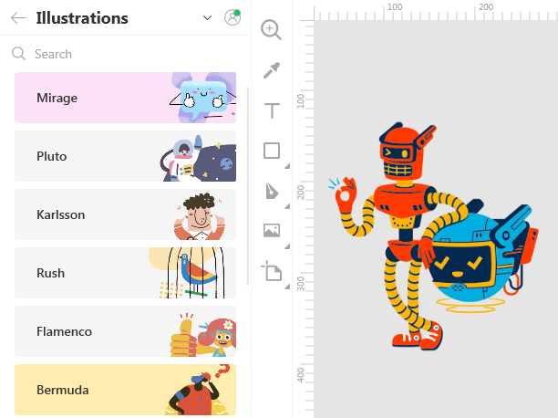
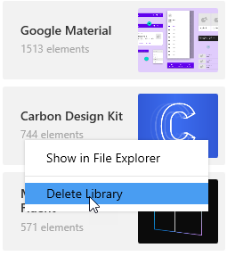
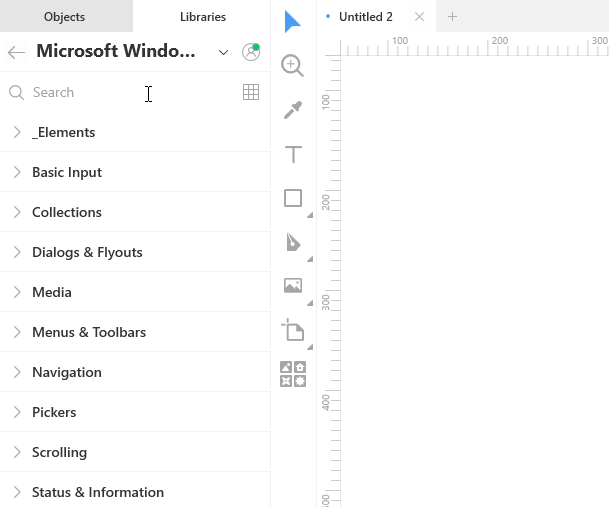

One of the cool things in Lunacy is Libraries. Libraries are collections of visual elements that you can add onto your designs in no time. These collections are accessible through the content tabs and include the following:
For your convenience, the items inside libraries (icons and vector illustrations) are organized by styles categories. Also, to find the required item, you can use the search field at the top of the left panel. Once you've found the item you like, just click it and drag onto the canvas. That's it!
Now you can work with the item in the same way as with any other similar layers.
With some limitations you can use all the library items for free. Speaking in plain words, if you are using our app and content for free, please be honest. Your designs must include a link to the Icons8 website, otherwise our lawyers get nervous and unhappy.
To be able to edit photos in high resolution or to convert icons and illustrations to vector you should subscribe to one of our paid plans.
The sections below describe library-specific actions that you can perform with library items.
The Lunacy icon library includes tons of icons in different styles. After installation your app will feature only free-to-use icons. To have the full library at hand, you should download it.
When working with the photo libraries you can make use of such handy features as:
To replace an image on the canvas, drag an image from the library and hover it somewhere near the center of the current image. Wait a moment until the green mask and replacement icon appear, and then release the mouse button.
To search the library for images similar to the one you have on the canvas, right-click the image and select Find similar on the displayed menu.
Lunacy will run through its photo library and display the best matches on the library panel.
Illustrations is a collection of vector images for awesome web, mobile and UI designs. But if you are on a free plan, you will only be able to use library items as rasters.
Like with photos, when working with illustrations you can use the replacement and find similar features.
With Lunacy you always have all popular UI kits at hand. They can be of great help when you are working on a project for a specific OS or device. You can quickly find the required components (buttons, menus, colors, etc.) and add them to your design.
Lunacy library includes the following UI kits:
In fact, UI kits are external .sketch files with ready-made components, layer styles and text styles.
To disable/enable UI kits:
You can create your own kits and save them for further use or share them with other people. For this, you should convert the components (UI elements, colors, typography) that you are going to reuse into components, layer and text styles, accordingly.
Also, you can add any other UI kits that you might find on the Internet or get from your team. The only requirement is that those must be .sketch files and they must include components.
To add a custom UI kit to the library:
To delete a custom UI kit from the library:
You can also use the Show in File Explorer command, to learn the location of a UI kit file.
In general, the workflow with UI kits is as follows:
To add an item from a UI kit library to your project:
Like with other library items, you can replace the selected item on the canvas with the one from the library.
On the Layers tab, items from a UI kit library appear with the link icon in front of their names (see the figure below). It indicates that the layer is an instance of a component from an external file. You cannot modify such layers, except for the size and overrides. To get more control over a library item, consider the following commands accessible on the context menu or menus invoked from the menu bar and the Inspector:
For more information on how to use layer and text styles from UI kits, read here.